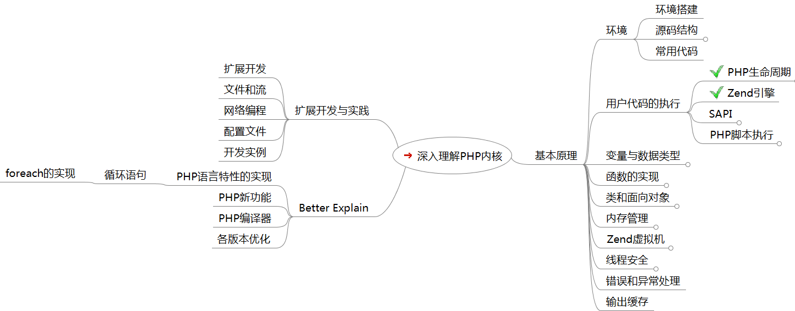

以下为深入理解PHP内核FreeMind 结构文件
深入理解PHP内核 <http://www.php-internals.com/book/>
扩展开发与实践
扩展开发
文件和流
网络编程
配置文件
开发实例
Better Explain
PHP语言特性的实现
循环语句
foreach的实现
PHP新功能
PHP编译器
各版本优化
基本原理
环境
环境搭建
源码结构
build
ext
main
Zend
pear
sapi
TSRM
tests
win32
常用代码
用户代码的执行
PHP生命周期
模块初始化阶段（MINIT）
模块激活阶段（RINIT）
请求到达，PHP初始化
脚本执行结束
停用模块（RSHUTDOWN）
关闭模块(MSHUTDOWN）
Zend引擎
SAPI
Apache模块
FastCGI
嵌入式
PHP脚本执行
词法分析
语法分析
OPcode
变量与数据类型
变量的结构和类型
哈希表
哈希表实现
链表
常量
预定义常量
静态常量
类型提示的实现
变量的生命周期
数据类型转换
函数的实现
函数的内部结构
函数的定义，传参及返回值
函数的调用和执行
匿名函数及闭包
类和面向对象
类的结构和实现
类的成员变量及方法
访问控制的实现
类的继承，多态及抽象类
魔术方法，延迟绑定及静态成员
PHP保留类及特殊类
对象
命名空间
标准类
内存管理
内存管理
PHP中的内存管理
内存使用：申请和销毁
垃圾回收
内存管理中的缓存
写时复制
内存泄漏
Zend虚拟机
虚拟机概述
语法的实现
词法解析
语法分析
实习自己的语法
中间代码的执行
PHP代码的加密解密
线程安全
线程，进程和并发
PHP线程安全
错误和异常处理
输出缓存